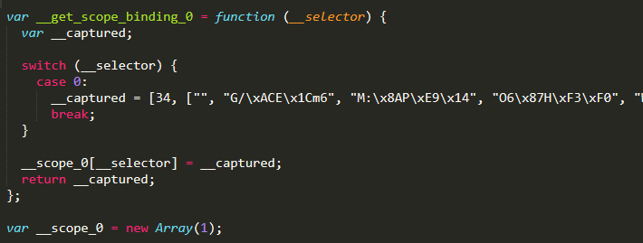
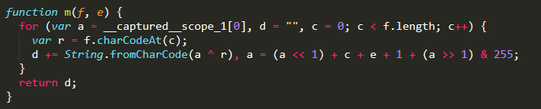
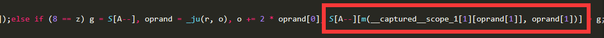
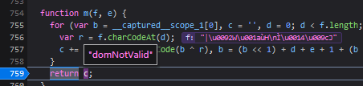
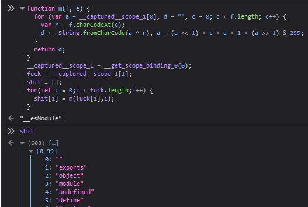
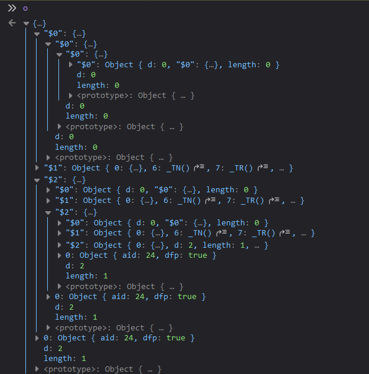
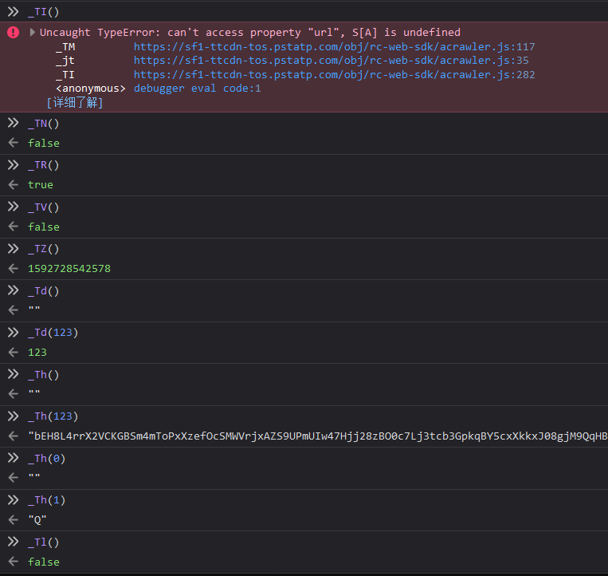
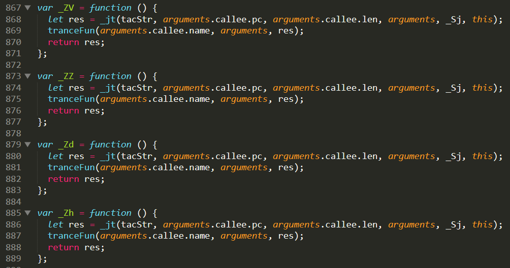
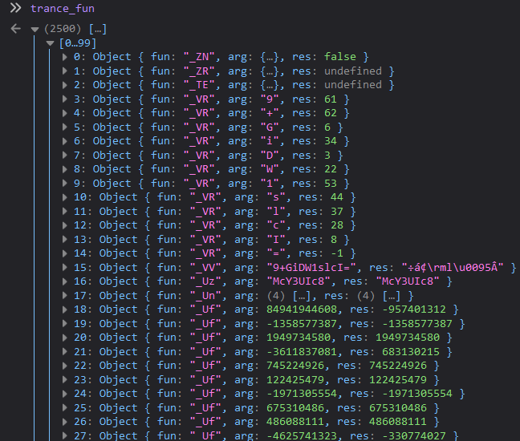
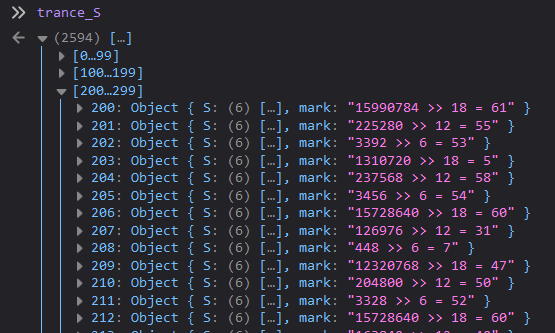

本文仅用于技术学习、交流，切莫用于非法用途，读者的一切行为后果自行承担。
密文数组解密
我做 JS 逆向有一个习惯，凡是看到了密文数组，就一定要先把明文搞到。
不难发现，密文数组是通过调用 __get_scope_binding_0(0) 获得的，然后就可以发现密文数组还被保存在 __captured__scope_1 中。

搜索 __captured__scope_1，很容易找到这个函数：

怎么看都很像解密函数嘛！根据我的经验，一般解密函数需要传入密文字符串（或在密文数组、长密文字符串中的位置）及其对应的“密钥”（想不到更贴切的词，就叫密钥吧），返回值则是对应的明文。于是继续找对这个函数的调用，找到了这里：

打个断点，然后去网页上刷新一下，果然，这里就是解密函数：

观察 m(__captured__scope_1[1][oprand[1]], oprand[1])，第一个参数是 __captured__scope_1[1][oprand[1]，第二个参数是 oprand[1]，而 __captured__scope_1[1] 就是密文数组。两个参数中用到的都是 oprand[1]，那么就很好办了。
写个简单的 for 循环就可以拿到全部明文：
// 直接拷出来
function m(f, e) {
for (var a = __captured__scope_1[0], d = "", c = 0; c < f.length; c++) {
var r = f.charCodeAt(c);
d += String.fromCharCode(a ^ r), a = (a << 1) + c + e + 1 + (a >> 1) & 255;
}
return d;
}
__captured__scope_1 = __get_scope_binding_0(0);
fuck = __captured__scope_1[1];
shit = [];
for(let i = 0;i < fuck.length;i++) {
shit[i] = m(fuck[i],i);
}运行结果：

一共拿到 608 个字符串（太多就不贴出来了），拷贝出来看看，可以发现不少有意思的东西，得到一些实用的线索。可惜的是，由于代码做了控制流平坦化，而不只是单纯的字符串隐藏，所以无法通过明文数组来恢复代码。
使用正则表达式 "\d+" 搜索，可以发现这些写死的纯数字字符串：
[
// 二进制是111111000000000000000000
"16515072",
"3735928559",
"31536000000",
"6",
"117",
"00",
"0000",
"00000001",
"10",
// 2的32次方
"4294967296",
"000",
"01",
"2654435769",
"111",
"110"
]另外还发现了这些比较特别的字符串：
[
// 看起来像变表Base64码表
"Dkdpgh4ZKsQB80/Mfvw36XI1R25+WUAlEi7NLboqYTOPuzmFjJnryx9HVGcaStCe",
// ？？？
"\u0098\u0011 ½",
// 看起来像随机字符串格式
"xxxxxxxxxxxx4xxxyxxxxxxxxxxxxxxx",
// 4个时间戳是要闹哪样
"timestamp1",
"timestamp2",
"timestamp3",
"timestamp4",
// 估计是环境检测用，便于反模拟、反Selenium
"__webdriver_evaluate",
"__selenium_evaluate",
"__webdriver_script_function",
"__webdriver_script_func",
"__webdriver_script_fn",
"__fxdriver_evaluate",
"__driver_unwrapped",
"__webdriver_unwrapped",
"__driver_evaluate",
"__selenium_unwrapped",
"__fxdriver_unwrapped",
"_selenium",
"callSelenium",
"_Selenium_IDE_Recorder",
// 通过前期抓包可知，访问这几个链接，会得到一些看起来像密钥的Base64字符串
"https://xxbg.snssdk.com/websdk/v1/getInfo",
"https://xxbg.snssdk.com/websdk/v1/p",
"https://xxbg.snssdk.com/websdk/v1/t"
]寻找逆向方法
观察函数
用 prepack 拆出来的几十个函数，全部都具有同样的形式：
var _XX = function () {
var a = arguments;
return _jt(tacStr, _XX.pc, _XX.len, a, _XX.z, this);
};其中，_XX.pc 和 _XX.len 是两个整数，而 _XX.z 是 _Sj。
不妨用正则替换 ', a, _..\.z, this' -> ', a, _Sj, this' 把这些 _XX.z 全部换成 _Sj（纯属个人习惯，实际毫无必要）。
这些函数是通过 _jt 间接执行的。不难看出，_jt 是借助 _XX.pc 和 _XX.len，从 tacStr 中截取一部分，然后解密并运行。
_Sj 的定义如下：
var _Sj = {
d: 1,
$1: void 0,
$0: _Sl,
length: 1,
0: void 0,
6: _TN,
7: _TR,
// ……省略……
108: _T3,
109: 2654435769,
110: 0,
112: _Zd,
111: _Zd,
113: _Zh,
114: _Zl,
115: _T6,
116: _T7,
117: false,
118: _T8,
119: _T9,
120: _TA,
121: _Zt,
122: _Zx,
123: void 0,
124: void 0,
125: "{\"boe\":false,\"aid\":0,\"dfp\":false,\"intercept\":false,\"enablePathList\":[],\"_enablePathListRegex\":[],\"urlRewriteRules\":[],\"_urlRewriteRules\":[],\"fpProfileUrl\":\"https://xxbg.snssdk.com/websdk/v1/getInfo\",\"paramUrl\":\"https://xxbg.snssdk.com/websdk/v1/p\",\"ubUrl\":\"https://xxbg.snssdk.com/websdk/v1/t\"}",
126: _TI
};_jt 的代码如下：
var _jt = function (f, a, b, d, c, r) {
null == r && (r = this);
var n,
i,
o = {},
l = o.d = c ? c.d + 1 : 0;
for (o["$" + l] = o, i = 0; i < l; i++) o[n = "$" + i] = c[n];
for (i = 0, l = o.length = d.length; i < l; i++) o[i] = d[i];
return _TM(f, a, b, o, r)[1];
};打个断点，会发现这里的 o 是一个含有 $0、$1、$2 三个属性的对象，其中 $0 是 包含 $0 自身的循环对象，$1 是 _Sj，$2 是 o 本身。

那么 _jt 就没必要关心了，关键是 _TM。
_TM 的代码如下：
var _TM = function (r, o, l, t, v, y) {
var __captured__scope_1 = __scope_0[0] || __get_scope_binding_0(0);
function h(f) {
S[++A] = f;
}
function k() {
return S[A--];
}
function m(f, e) {
for (var a = __captured__scope_1[0], d = "", c = 0; c < f.length; c++) {
var r = f.charCodeAt(c);
d += String.fromCharCode(a ^ r), a = (a << 1) + c + e + 1 + (a >> 1) & 255;
}
return d;
}
null == v && (v = this);
var g,
C,
x,
I,
S = [],
A = 0;
y && (g = y);
for (var w = o + 2 * l; o < w;) {
var z = 13 * _jz(r, o) % 241;
if (o += 2, 0 == (3 & z)) {
if (0 == (3 & (z >>= 2))) {
if (0 == (z >>= 2)) return [1, S[A--]];
if (2 == z) oprand = _ju(r, o), o += 2 * oprand[0], I = oprand[1], S[++A] = +I;else if (4 == z) g = S[A--], S[A] = S[A] * g;else if (6 == z) g = S[A--], S[A] = S[A] != g;else if (13 == z) C = S[A--], x = S[A--], (I = S[A--]).x === _TM ? S[++A] = _jt(r, I.pc, I.len, C, I.z, x) : S[++A] = I.apply(x, C);else {
if (15 != z) break;
oprand = _ju(r, o), I = oprand[1], S[A] = function (a, b) {
var d = function e() {
var a = arguments;
return _jt(r, e.pc, e.len, a, e.z, this);
};
return d.pc = a, d.len = b, d.x = _TM, d.z = t, d;
}(o + 6, I - 4), o += 2 * I - 2;
}
} else if (1 == (3 & z)) {
if (3 == (z >>= 2)) g = S[--A], S[A] = g(S[A + 1]);else if (5 == z) S[A -= 1] = S[A][S[A + 1]];else if (7 == z) S[A] = --S[A];else {
if (9 != z) break;
g = S[A--], S[A] = typeof g;
}
} else if (2 == (3 & z)) {
if (6 == (z >>= 2)) S[A] = _k0(S[A]);else if (8 == z) g = S[A--], oprand = _ju(r, o), o += 2 * oprand[0], S[A--][m(__captured__scope_1[1][oprand[1]], oprand[1])] = g;else {
if (10 != z) {
if (12 == z) throw S[A--];
break;
}
S[A] = ~S[A];
}
} else if (0 == (z >>= 2)) S[++A] = null;else if (2 == z) g = S[A--], S[A] = S[A] >= g;else if (9 == z) g = k(), C = k(), t[0] = 65599 * t[0] + t[g].charCodeAt(C) >>> 0;else if (11 == z) S[++A] = void 0;else {
if (13 != z) break;
g = S[A--], S[A] = S[A] && g;
}
} else if (1 == (3 & z)) {
if (0 == (3 & (z >>= 2))) {
if (4 == (z >>= 2)) {
oprand = _ju(r, o), I = oprand[1];
try {
if (_jx[__captured__scope_1[2]][2] = 1, 1 == (g = _TM(r, o + 6, I - 4, t, v))[0]) return g;
} catch (y) {
if (_jx[__captured__scope_1[2]] && _jx[__captured__scope_1[2]][1] && 1 == (g = _TM(r, _jx[__captured__scope_1[2]][1][0], _jx[__captured__scope_1[2]][1][1], t, v, y))[0]) return g;
} finally {
if (_jx[__captured__scope_1[2]] && _jx[__captured__scope_1[2]][0] && 1 == (g = _TM(r, _jx[__captured__scope_1[2]][0][0], _jx[__captured__scope_1[2]][0][1], t, v))[0]) return g;
_jx[__captured__scope_1[2]] = 0, __captured__scope_1[2]--;
}
o += 2 * I - 2;
} else if (6 == z) oprand = _ju(r, o), o += 2 * oprand[0], I = oprand[1], S[A -= I] = _k1("x,y", "return new x[y](" + Array(I + 1).join(",x[++y]").substr(1) + ")")(S, A);else if (8 == z) g = S[A--], S[A] = S[A] & g;else if (10 != z) break;
} else if (1 == (3 & z)) {
if (0 == (z >>= 2)) S[A] = !S[A];else if (7 == z) C = S[A--], g = delete S[A--][C];else if (9 == z) oprand = _ju(r, o), o += 2 * oprand[0], S[A] = S[A][m(__captured__scope_1[1][oprand[1]], oprand[1])];else {
if (11 != z) break;
g = S[A--], S[A] = S[A] << g;
}
} else if (2 == (3 & z)) {
if (1 == (z >>= 2)) S[++A] = g;else if (3 == z) g = S[A--], S[A] = S[A] <= g;else if (10 == z) g = S[A -= 2][S[A + 1]] = S[A + 2], A--;else if (12 == z) g = S[A], S[++A] = g;else {
if (14 != z) break;
g = S[A--], S[A] = S[A] || g;
}
} else if (0 == (z >>= 2)) S[A] = !S[A];else if (2 == z) oprand = _ju(r, o), o += 2 * (I = oprand[1]) - 2;else if (4 == z) g = S[A--], S[A] = S[A] / g;else if (6 == z) g = S[A--], S[A] = S[A] !== g;else {
if (13 != z) break;
S[++A] = v;
}
} else if (2 == (3 & z)) {
if (0 == (3 & (z >>= 2))) {
if (1 == (z >>= 2)) g = S[A--], S[A] = S[A] > g;else if (8 == z) oprand = _ju(r, o), o += 2 * oprand[0], I = oprand[1], C = A + 1, S[A -= I - 1] = I ? S.slice(A, C) : [];else if (10 == z) oprand = _ju(r, o), o += 2 * oprand[0], I = oprand[1], g = S[A--], t[I] = g;else {
if (12 != z) break;
g = S[A--], S[A] = S[A] >> g;
}
} else if (1 == (3 & z)) {
if (0 == (z >>= 2)) S[++A] = _k2;else if (2 == z) g = S[A--], S[A] = S[A] + g;else if (4 == z) g = S[A--], S[A] = S[A] == g;else if (11 == z) oprand = _ju(r, o), o += 2 * oprand[0], I = oprand[1], S[--A] = _k1("x,y", "return x " + m(__captured__scope_1[1][I], I) + " y")(S[A], S[A + 1]);else {
if (13 != z) break;
g = S[A - 1], C = S[A], S[++A] = g, S[++A] = C;
}
} else if (2 == (3 & z)) {
if (1 == (z >>= 2)) oprand = _ju(r, o), o += 2 * oprand[0], S[++A] = m(__captured__scope_1[1][oprand[1]], oprand[1]);else if (3 == z) S[A--] ? o += 6 : (oprand = _ju(r, o), o += 2 * (I = oprand[1]) - 2);else if (5 == z) g = S[A--], S[A] = S[A] % g;else if (7 == z) g = S[A--], S[A] = S[A] instanceof g;else {
if (14 != z) break;
S[++A] = !1;
}
} else if (4 == (z >>= 2)) oprand = _ju(r, o), I = oprand[1], _jx[__captured__scope_1[2]][0] && !_jx[__captured__scope_1[2]][2] ? _jx[__captured__scope_1[2]][1] = [o + 6, I - 4] : _jx[__captured__scope_1[2]++] = [0, [o + 6, I - 4], 0], o += 2 * I - 2;else if (6 == z) oprand = _ju(r, o), o += 2 * oprand[0], I = oprand[1], S[++A] = t["$" + I];else {
if (8 != z) break;
g = S[A--], S[A] = S[A] | g;
}
} else if (0 == (3 & (z >>= 2))) {
if (1 == (z >>= 2)) oprand = _ju(r, o), o += 2 * oprand[0], I = oprand[1], S[++A] = +m(__captured__scope_1[1][I], I);else if (3 == z) g = S[A--], S[A] = S[A] - g;else if (5 == z) g = S[A--], S[A] = S[A] === g;else if (12 == z) C = S[A--], x = S[A--], (I = S[A--]).x === _TM ? S[++A] = _jt(r, I.pc, I.len, C, I.z, x) : S[++A] = I.apply(x, C);else {
if (14 != z) break;
g = S[A], S[A] = S[A - 1], S[A - 1] = g;
}
} else if (1 == (3 & z)) {
if (2 == (z >>= 2)) h(function (f) {
var e = 0,
a = f.length;
return function () {
var b = e < a;
b && h(f[e++]), h(b);
};
}(S[A]));else if (4 == z) oprand = _ju(r, o), o += 2 * oprand[0], I = oprand[1], g = t[I], S[++A] = g;else if (6 == z) S[A] = ++S[A];else {
if (8 != z) break;
g = S[A--], S[A] = S[A] in g;
}
} else if (2 == (3 & z)) {
if (5 == (z >>= 2)) ;else if (7 == z) g = S[A--];else if (9 == z) g = S[A--], S[A] = S[A] ^ g;else {
if (11 != z) break;
oprand = _ju(r, o), I = oprand[1], _jx[++__captured__scope_1[2]] = [[o + 6, I - 4], 0, 0], o += 2 * I - 2;
}
} else if (1 == (z >>= 2)) g = S[A--], S[A] = S[A] < g;else if (8 == z) oprand = _ju(r, o), o += 2 * oprand[0], I = oprand[1], S[A] = S[A][I];else if (10 == z) S[++A] = !0;else {
if (12 != z) break;
g = S[A--], S[A] = S[A] >>> g;
}
}
return [0, null];
};这里的 for 循环就是对函数对应的加密字符串进行解密并传入参数执行的地方，要了解整个 js 文件的执行逻辑，需要从这里入手。
不过，在此之前，可以先到控制台去执行一下这几十个函数。

观察控制流平坦化特征
_TM 的 for 循环是一个状态机，z 是状态标识。循环的每一轮，会先执行 z = 13 * _jz(r, o) % 241 对 z 进行赋值，而在 if 语句中执行判断时，z 也会被改变。
打个断点稍作跟踪，可以发现在代码执行过程中，变量 g、C、x、I、S、A、oprand 相互配合，起到了类似于堆栈、寄存器和 PC 指针的作用。
对这段代码的逆向，我有两个大致的思路。
第一种做法是，找出 z 的变化规律，从而推测出整个状态机的运行方式，再破解出 g、S 等变量的作用与变化规律，最后借助 AST 进行代码还原。显然这是难度很大的，只能作为下下之策。
第二种做法是，通过插桩的方式记录 S 的变化全过程，间接得到函数执行过程中的变量变化过程，从而分别推导每个函数的执行逻辑。 这种方法很容易实现，但是分析过程的工作量可能比较大。
函数插桩
首先给几十个 _XX 函数插桩。
由于这些函数的形式都非常简单，我需要的也只是拿到函数的输入输出，因此可以采用 Hook 的方式，也可以采用修改代码的方式。
这里我采用的是直接修改代码的方式。
首先在整个 js 文件的开头定义一个用于记录函数参数及返回值的数组，然后写一个用于插入记录的函数：
var trance_fun = [];
function tranceFun(fun, arg, res) {
let argArr = Array.prototype.slice.call(arg);
trance_fun[trance_fun.length] = {
fun: fun,
arg: argArr.length > 1 ? argArr : argArr[0],
res: res
};
}我需要对 _XX 进行批量修改，让这些函数在函数体完全相同的情况下，保持原有的功能。_XX.pc 可以通过 arguments.callee.pc 来得到，_XX.len 同理。
也就是说，我需要做的是这样的改造：
var _XX = function () {
var a = arguments;
return _jt(tacStr, _XX.pc, _XX.len, a, _Sj, this);
};
// ↓
var _XX = function () {
let res = _jt(tacStr, arguments.callee.pc, arguments.callee.len, arguments, _Sj, this);
tranceFun(arguments.callee.name, arguments, res);
return res;
};在文本编辑器中执行正则替换 var a = arguments;\n return _jt\(tacStr, _..\.pc, _..\.len, a, _Sj, this\); -> let res = _jt(tacStr, arguments.callee.pc, arguments.callee.len, arguments, _Sj, this);\n tranceFun(arguments.callee.name, arguments, res);\n return res; 即可。

到浏览器去刷新页面，发现一切如常。然后到控制台查看 trance_fun：

状态机插桩
对函数的插桩只能得到一部分表层的信息，要想了解代码的真正运行过程，还必须对核心的状态机进行插桩。
再定义一个用于记录 S 变化的数组：
var trance_S = [];
// 网上拷的代码，深拷贝并避开对象循环自引用陷阱
function deepClone(source,uniqueList){
function find(arr,item){
for(var i=0; i<arr.length; i++){
if(arr[i].source === item){
return arr[i]
}
}
return null;
}
function isObject(obj) {
return typeof obj === 'object' && obj != null;
}
if(!isObject(source)) return source;
if(!uniqueList) uniqueList = [];
var target = Array.isArray(source) ? [] : {};
var uniqueData = find(uniqueList,source);
if(uniqueData) return uniqueData.target;
uniqueList.push({
source:source,
target:target
});
for(var key in source){
if(Object.prototype.hasOwnProperty.call(source,key)){
if(isObject(source[key])){
target[key] = deepClone(source[key], uniqueList)
}else{
target[key] = source[key];
}
}
}
return target;
}
function tranceS(S, mark) {
trance_S[trance_S.length] = {
S: deepClone(S),
mark: mark
};
}整个处理流程没有什么技术含量，但工作量比较大，这里截取其中一小段代码举例说明：
if (1 == (z >>= 2)) g = S[A--], S[A] = S[A] > g;else if (8 == z) oprand = _ju(r, o), o += 2 * oprand[0], I = oprand[1], C = A + 1, S[A -= I - 1] = I ? S.slice(A, C) : [];else if (10 == z) oprand = _ju(r, o), o += 2 * oprand[0], I = oprand[1], g = S[A--], t[I] = g;else {
if (12 != z) break;
g = S[A--], S[A] = S[A] >> g;
}首先把代码搞得好看点，换下行、加下大括号、把逗号换成分号，最终变成这样：
if (0 == (3 & (z >>= 2))) {
if (1 == (z >>= 2)) {
g = S[A--];
S[A] = S[A] > g;
}
else if (8 == z) {
oprand = _ju(r, o);
o += 2 * oprand[0];
I = oprand[1];
C = A + 1;
S[A -= I - 1] = I ? S.slice(A, C) : [];
}
else if (10 == z) {
oprand = _ju(r, o);
o += 2 * oprand[0];
I = oprand[1];
g = S[A--];
t[I] = g;
}
else {
if (12 != z) break;
g = S[A--];
S[A] = S[A] >> g;
}
}然后插桩：
if (0 == (3 & (z >>= 2))) {
if (1 == (z >>= 2)) {
g = S[A--];
let temp = S[A];
S[A] = S[A] > g;
// 记录大于判断 因为会有很多1>0之类的判断，对逆向没什么用，所以只在有需要的时候开就好
// tranceS(S, temp + ' > ' + g + ' = ' + S[A]);
}
else if (8 == z) {
oprand = _ju(r, o);
o += 2 * oprand[0];
I = oprand[1];
C = A + 1;
// 这里不必记录
S[A -= I - 1] = I ? S.slice(A, C) : [];
}
else if (10 == z) {
oprand = _ju(r, o);
o += 2 * oprand[0];
I = oprand[1];
g = S[A--];
t[I] = g;
}
else {
if (12 != z) break;
g = S[A--];
let temp = S[A];
S[A] = S[A] >> g;
// 记录有符号右移
tranceS(S, temp + ' >> ' + g + ' = ' + S[A]);
}
}这样处理完这一小段代码，之后就可以在控制台中看到 S 的变化了。

对整个 for 循环中想要追踪的变化用类似的方式进行插桩即可。值得记录的主要有位运算、四则运算、函数调用，像大于、小于、逻辑取反这样的运算可以不作记录。
在插桩过程中，会发现 S[++A] = I.apply(x, C); 这样一句代码。这里显然是在执行函数。可以额外设置一个数组来记录它：
var trance_I = [];
function tranceI(I, args) {
trance_I[trance_I.length] = {
fun: I.name,
arg: args
};
}插桩时同时记录到两个数组中：
S[++A] = I.apply(x, C);
tranceI(I,[x, C]);
tranceS(S, 'apply ' + I.name + ' (' + x + ' ' + C + ') = ' + S[A]);做完全部插桩处理后，刷新页面，会发现页面卡死，需要等很长时间才能继续运行。这主要是因为复制了太多的 S 数组。
增加一个全局布尔变量 dcp，设置为 false，然后改写一下 tranceS：
function tranceS(S, mark) {
trance_S[trance_S.length] = {
S: dcp ? deepClone(S) : S,
mark: mark
};
}这样，初始情况下会使用浅拷贝。在需要深拷贝的时候再将 dcp 设置为 true 即可。
最后再写一个用于清空三个记录数组的函数：
function cleanTrance(){
trance_fun = [];
trance_S = [];
trance_I = [];
}对整个 for 循环中的各处 S 赋值，我是手工一处处搞的（反正也不多），其实也可以用 AST 批量解决，但需要额外编写程序。完成了状态机的插桩之后，之后就可以真正开始签名生成过程的分析了。